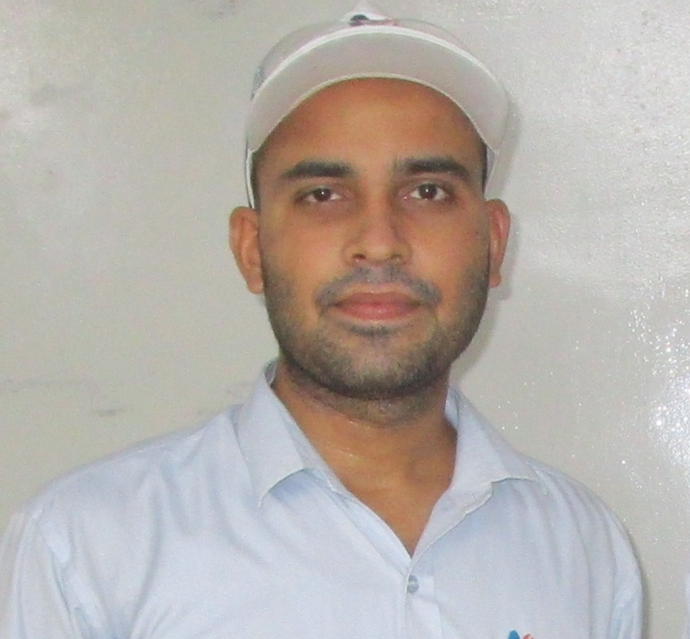

I observe and analyze abnormal events in process and make the process smooth & improved by eleminating abnormal events.

I am a Senior Production Engineer with strong experience in production management, process optimization, and
quality control within manufacturing environments. Skilled in improving operational efficiency, reducing
downtime, and ensuring smooth production flow, I focus on delivering high-quality results while maintaining
safety and performance standards.
I have hands-on expertise in production planning, team coordination, problem-solving, and continuous process
improvement. Passionate about innovation and efficiency, I am committed to achieving operational excellence
and contributing to organizational growth through effective engineering solutions.
Productivity improvement by time & motion study, 3M Elemination and line balancing.
In Recliner zone rejection of spatter during welding process reduced by Six Sigma approach.
Responsive personal portfolio website design.